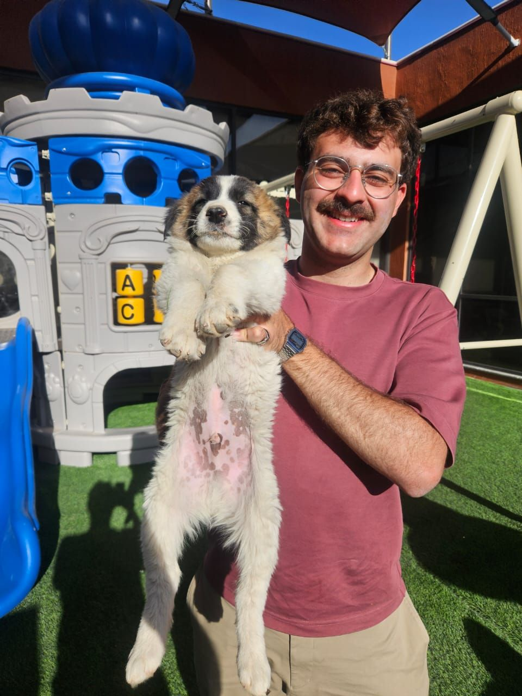
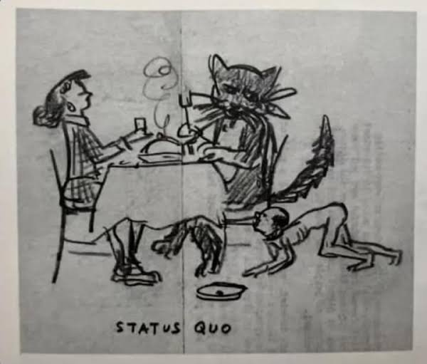
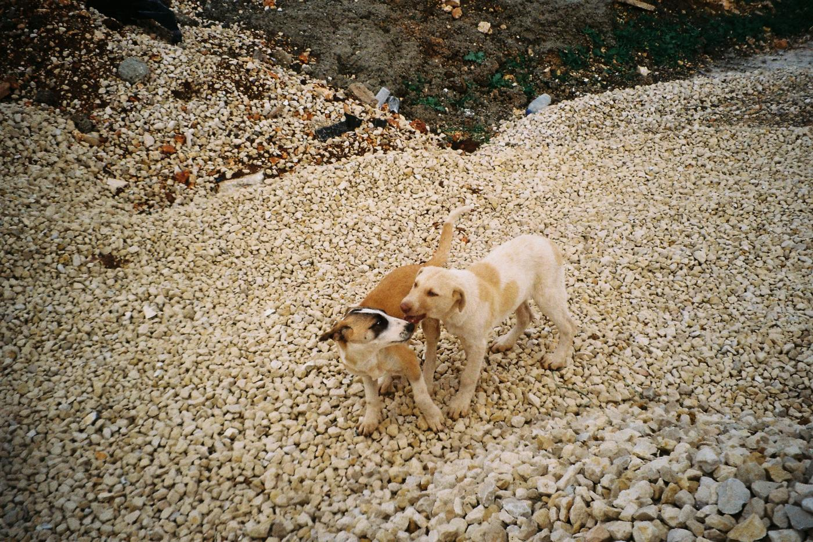
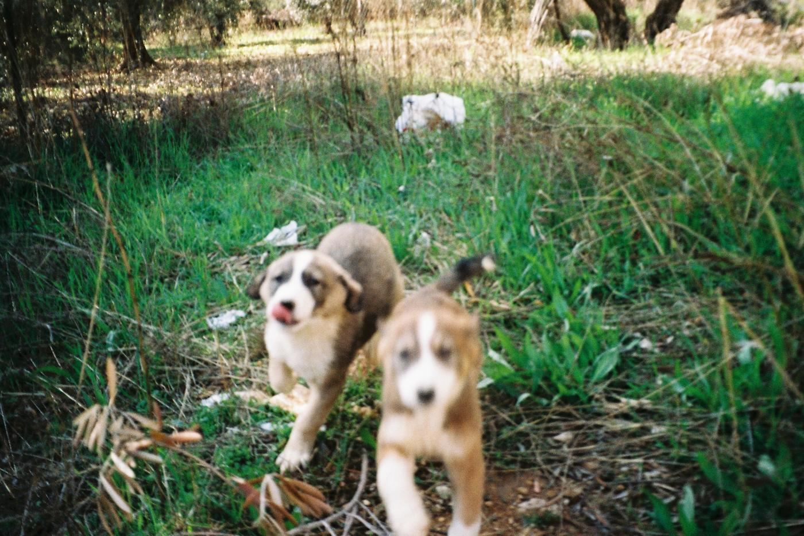

كان عندي حقد على الكلاب. ولسّا عندي. يمكن أحياناً بيضايقني قدّيش الناس بتحب الكلاب. المشكلة مش إني بكره الكلاب (أنا بحب ألعب مع كلب)، بس مشكلتي مع النظرة تجاه الكلاب وكيف يعامَلوا، خصوصاً بالغرب.

ما بحب لما يدلّعوا الكلاب كإنهم أطفال. ما بحب لما أي حد يدلّع أي إشي غير الطفل. إنك تكون حريص زيادة عن اللزوم على غرض غالي وتحطّه على مهل؛ يعني أنا دافع مصاري عشان أتوتّر على هالغرض؟ بكره أشوف ناس كبار بيتدلّعوا كإنهم أطفال.
بس خلّيني أرجع للموضوع.
ممكن دكتور نفسي يحكيلي إني بغار من الكلاب. شوف هالرسمة اللي رسمها إدوارد هوبر ليعبّر عن غيرته من قطة مرته. أنا بحسّ فيها لأعماقي.

ودكتور نفسي ثاني ممكن ينكشني ليفهم ليش بنقهر لما أشوف الناس فرحانين بالفرحة البسيطة هاي. صعب عليّ أتقبّل فكرة إنه الكلب ممكن يحبّك. يمكن هاد معناه إني مش قادر أتقبّل فكرة الحب غير المشروط، فبرفض أشوف الكلاب أكثر من حيوان يتشغل.
وبنفس الوقت، الناس بالغرب ما بتعرف فعليا الكلاب المتشردة. يا زلمة ما بيفهموا إنه الكلاب ممكن تكون عنيفة. مش كل الكلاب بدها تحبّك. هاي الكلاب الكنعانية ما بتمزح. مع إني بصراحة بشوف إنها مكروهة أكثر من اللازم بالأردن؛ هاي كلاب عريقة، عمرها ٩٠٠٠ سنة.

مرة أبوي اشترالنا كلب بعشرين دينار (يعني تقريباً ٢٠ جنيه إسترليني) من وسط البلد. الجرو اجا بكيس يا حرام. وكان شرس. عضّه لأبوي. ما بعرف شو صار فيه.

الكلاب حيوانات، وحيوانات عظيمة كمان. فيها طاقة كثير وبتحب تركض وتنطّ وتنضرب وبتخبط بالحيط وبتوقع وما بتحسّ بإشي. مخلوقة لتعيش برّا. ليش بنلبّسها أواعي؟ ليش بنقلق لما توقع؟ ليش بنطعميها أكل خاص؟ زمان الـ"doggy bag" كانت أي بواقي أكل رح ياكلها الكلب. هلّق صار ممنوع ياكل أي إشي.
أنا بموت على هديك الفيديوهات اللي فيها كلاب بتاكل كبدة نيّة وعظم وإدنين أرانب وقلوب جاج. إنت حيوان، اطحن أيوا هيك. بضايقني كيف الناس هون بيطّلعوا عليّ مستغربين ومتضايقين لما أحكيلهم إنه كلبي بعمّان عايش برّا. في بني آدمين حرفياً عايشين برّا. منمشي من فوقهم وإحنا رايحين على الشغل، بس كلب عايش برّا هاي إهانة. أما زلمة مشرّد معه كلب، هون الناس بتوقف.
صار الموضوع يشبه لما توني سوبرانو بيحلم إنه البطّ أخذ عضوه، وطلع المعنى الحقيقي خوفه إنه عيلته تتركه. رح أوقف هون.
أثار هذا المقال، باحترام، ردًّا من يوري السواعير. اقرأه هنا.
اضغط على الصورة للعودة للصفحة الرئيسية